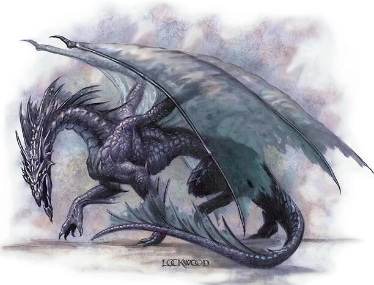

| 环境: | 地下 |
| 组织: | 雏龙,幼龙,少年,青少年,和青年:独居或一窝(2-5);成年,壮年,老年,极老,古龙,上古龙,或太古龙:独居,配偶,或家庭(1-2和2-5后代) |
| 挑战等级: | 雏龙3;幼龙4;少年6;青少年8;青年11;成年13;壮年16;老年18;极老19;古龙21;上古龙22;太古龙24 |
| 财宝: | 三倍标准 |
| 阵营: | 总是混乱邪恶 |
| 成长: | 雏龙5-6生命骰;幼龙8-9生命骰;少年11-12生命骰;青少年14-15生命骰;青年17-18生命骰;成年20-21生命骰;壮年23-24生命骰;老年26-27生命骰;极老29-30生命骰;古龙32-33生命骰;上古龙35-36生命骰;太古龙38+生命骰 |
| 等级调整: | 雏龙+3;幼龙+3;少年+3,青少年+4;其它― |
影龙是狡猾而阴险的生物，与阴影位面有关系。
影龙有半透明的鳞和黑色的身体，这给予它们朦胧的外表；从远处看，它们似乎只是一团不祥的阴影。
影龙喜欢从隐藏处攻击，利用它们的融身入影能力。它们使用幻术系法术来困惑和误导敌人。
用于克服伤害减免时，青年以上的影龙的天生武器视为魔法武器。
喷吐武器(超自然):影龙的喷吐武器是锥形的翻腾、烟状的阴影，它有能量吸取效果。锥形内的生物获得负向等级，其数量等于影龙的各项数值依年龄列表上所标明的；用于移除负向等级的豁免检定也在该表上给出。成功的反射豁免(对抗相同DC)使负向等级的数量减半（向下取整）。
融身入影(超自然):在除了完全日光之外的任何照明条件下，幼龙以上的影龙都能消失在阴影中，这给予它完全隐蔽。人工照明-即使是光亮术或不灭明焰法术-不能否定这种能力。然而，昼明术可以。
制造阴影(Create Shadows)(超自然):每日三次，太古影龙能够以魔法召唤出一团跃动的阴影，半径100码，持续1小时(这是一个创造效果)。
半径内的所有正常和魔法的光源都被否定。阴影内的所有角色和生物的躲藏检定获得+4加值，而且即使被直接观察，也能躲藏。阴影内的影龙和其它与阴影位面有关系的生物获得完全隐蔽，然而它们能正常移动和攻击。它们的攻击获得+2加值并否定敌人的防御等级的任何敏捷加值，因为它们被视为隐形的。
类法术能力：3/日――镜影术，回避侦测；2/日――任意门；1/日――行影术。
| 年龄 | 体型 | 生命骰 | 力量 | 敏捷 | 体质 | 智力 | 感知 | 魅力 | 基础攻击/擒抱 | 攻击 | 强韧 | 反射 | 意志 | 喷吐武器(DC) | 气势凶猛DC |
|---|---|---|---|---|---|---|---|---|---|---|---|---|---|---|---|
| 雏龙 | 超小 | 4d12+4 (30) | 11 | 10 | 13 | 14 | 14 | 15 | +4/-4 | +6 | +5 | +4 | +6 | 1 (14) | ― |
| 幼龙 | 小 | 7d12+7 (52) | 13 | 10 | 13 | 16 | 16 | 17 | +7/+4 | +9 | +6 | +5 | +8 | 1 (16) | ― |
| 少年 | 小 | 10d12+10 (75) | 13 | 10 | 13 | 16 | 16 | 17 | +10/+7 | +12 | +8 | +7 | +10 | 1 (18) | ― |
| 青少年 | 中 | 13d12+26 (110) | 15 | 10 | 15 | 18 | 18 | 19 | +13/+15 | +15 | +10 | +8 | +12 | 2 (20) | ― |
| 青年 | 中 | 16d12+32 (136) | 17 | 10 | 15 | 18 | 18 | 19 | +16/+19 | +19 | +12 | +10 | +14 | 2 (22) | 22 |
| 成年 | 大 | 19d12+57 (180) | 19 | 10 | 17 | 20 | 20 | 21 | +19/+27 | +22 | +14 | +11 | +16 | 3 (24) | 24 |
| 壮年 | 大 | 22d12+88 (231) | 23 | 10 | 19 | 20 | 20 | 21 | +22/+32 | +27 | +17 | +13 | +18 | 4 (26) | 26 |
| 老年 | 超大 | 25d12+125 (287) | 27 | 10 | 21 | 24 | 24 | 25 | +25/+41 | +31 | +19 | +14 | +21 | 5 (29) | 29 |
| 极老 | 超大 | 28d12+140 (322) | 29 | 10 | 21 | 26 | 26 | 27 | +28/+45 | +35 | +21 | +16 | +24 | 5 (32) | 32 |
| 古龙 | 超大 | 31d12+186 (387) | 31 | 10 | 23 | 28 | 28 | 29 | +31/+49 | +39 | +22 | +17 | +26 | 6 (34) | 34 |
| 上古龙 | 巨 | 34d12+238 (459) | 33 | 10 | 25 | 30 | 30 | 31 | +34/+57 | +41 | +26 | +19 | +29 | 7 (37) | 37 |
| 太古龙 | 巨 | 37d12+296 (536) | 35 | 10 | 27 | 32 | 32 | 33 | +37/+61 | +45 | +29 | +21 | +32 | 8 (39) | 39 |
| 年龄 | 速度 | 先攻 | 防御等级 | 特殊能力 | 施法者等级 | 法术抗力 |
|---|---|---|---|---|---|---|
| 雏龙 | 80英尺,飞行150英尺（普通） | +0 | 19 (+2体型，+7天生) | 免疫能量吸取 | ― | 12 |
| 幼龙 | 80英尺,飞行150英尺（普通） | +0 | 21(+1体型，+10天生) | 融身入影 | ― | 13 |
| 少年 | 80英尺,飞行150英尺（普通） | +0 | 24 (+1体型，+13天生) | ― | ― | 15 |
| 青少年 | 80英尺,飞行150英尺（不良） | +0 | 26(+16天生) | 镜影术 | 1 | 17 |
| 青年 | 80英尺,飞行150英尺（不良） | +0 | 29(+19天生) | 伤害减免5/魔法 | 3 | 20 |
| 成年 | 80英尺,飞行150英尺（不良） | +0 | 31(-1体型,+22天生) | 任意门 | 5 | 22 |
| 壮年 | 80英尺,飞行150英尺（不良） | +0 | 34(-1体型,+25天生) | 伤害减免10/魔法 | 7 | 25 |
| 老年 | 80英尺,飞行150英尺（不良） | +0 | 36(-2体型,+28天生) | 回避侦测 | 9 | 27 |
| 极老 | 80英尺,飞行150英尺（不良） | +0 | 39(-2体型,+31天生) | 伤害减免15/魔法 | 11 | 28 |
| 古龙 | 80英尺,飞行150英尺（不良） | +0 | 42(-2体型,+34天生) | 行影术 | 13 | 30 |
| 上古龙 | 80英尺,飞行150英尺（笨拙） | +0 | 43(-4体型,+37天生) | 伤害减免20/魔法 | 15 | 31 |
| 太古龙 | 80英尺,飞行150英尺（笨拙） | +0 | 46(-4体型,+40天生) | 制造阴影 | 17 | 33 |
*也能将牧师法术和来自混乱、邪恶和诡术领域的那些法术作为奥术施放。